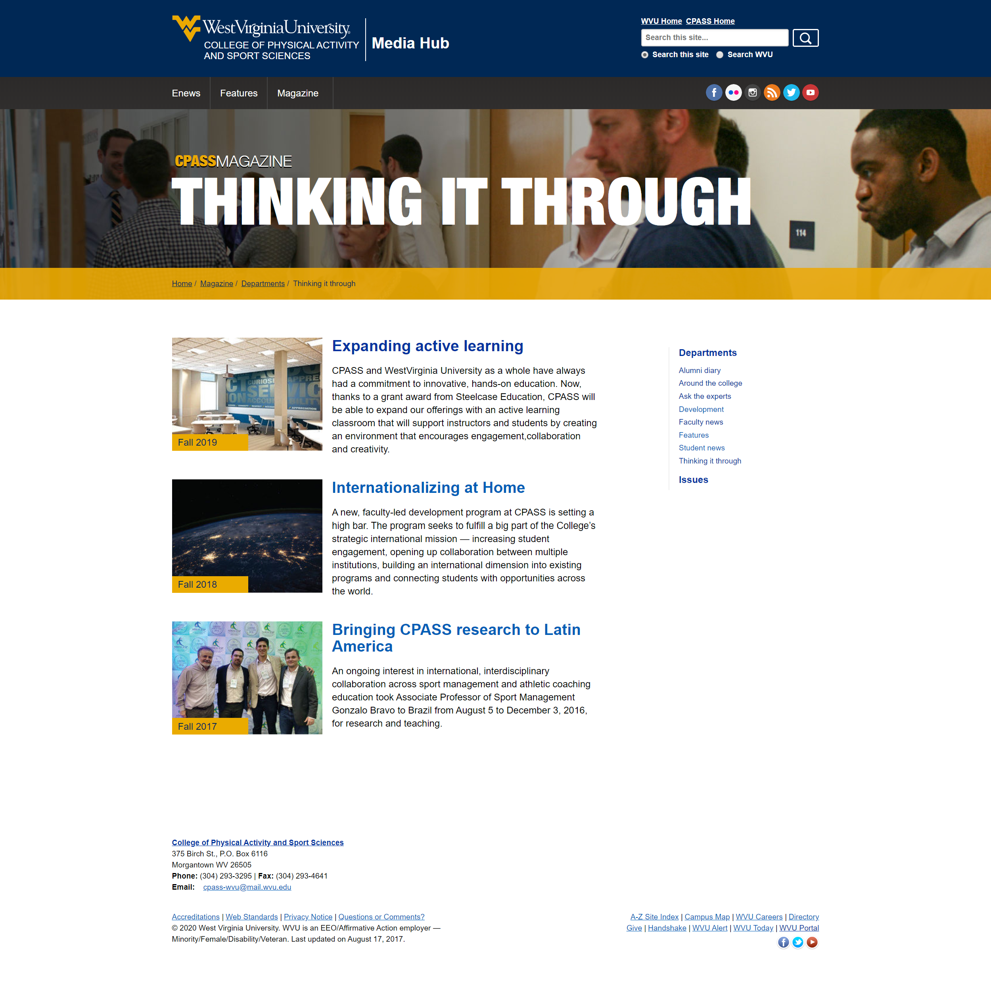
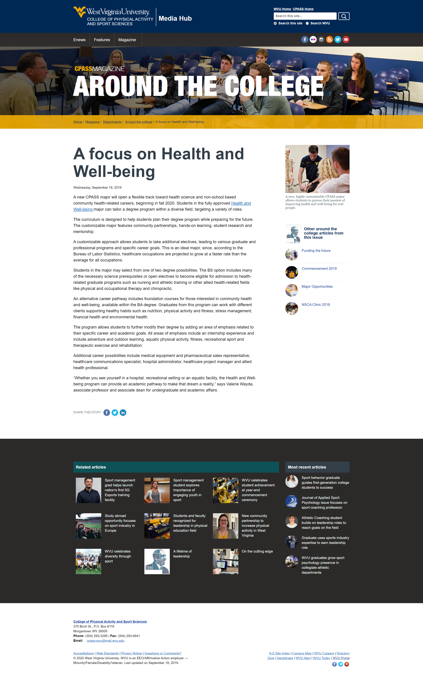
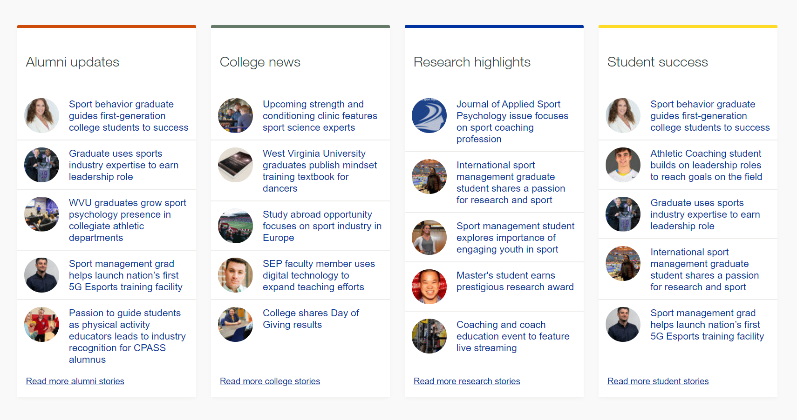
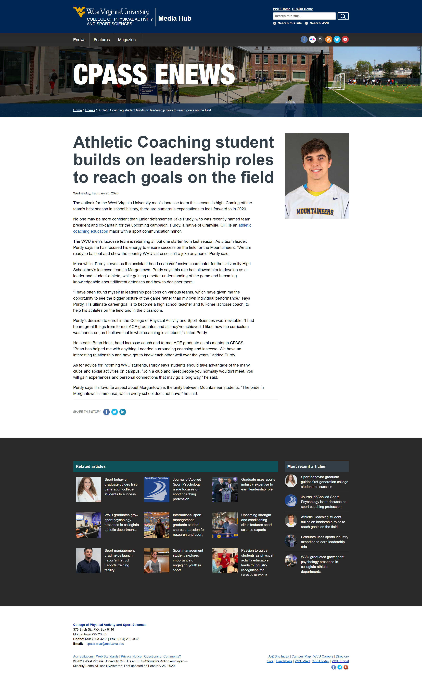

Expanding digital presence through the CPASS Media Hub
Our initial challenge
Lots of time spent on print version of magazine
::Insert Perspective photo here::
Content wasn't accessible for web
::insert pdf icon and/or screenshot of issuu flipbook::
After the initial E distribution, users rarely came back or viewed other stuff
::insert analytics graph of a spike from an eblast::What we wanted to happen
Improved accessibility
The ability to reference magazine articles independently
Users to check out our ENews articles
Better retention of users from E distribution
Enter 2016
New branding = new magazine
New version of cleanslate = opportunity to build a new media website
Magazine redesign
Setting some ground rules
Solidified departments
- Alumni diary
- Around the college
- Faculty news
- Student news
- Ask the experts (research)
- Thinking it through (collaboration)
Set requirements for features
- No less than a spread
- At least 2-3 per issue
Building the Media Hub

One blog to rule them all
Two templates for all articles
- Normal news articles
- Feature pieces (multiple headlines, subsections, etc.)
Strict tagging rules
- ENews articles must be tagged "enews"
- Magazine articles must be tagged "magazine"
- Magazine departments must be tagged
- Features must be tagged "feature"
- All tags must be lower case and use common abreviations for programs
Three main sections
- ENews
- Features
- Magazine
Breaking down barriers
Show users links to other related articles
::Related articles and recent articles screen shot::
Putting it all together
The Magazine
- Every issue has its own homepage
- Every department has an index
- Every article has a unique URL
CPASS alumni magazine homepage

Issue: Fall 2018

Department index
A typical magazine article
ENews
- Articles are catagorized
- Can do long-form articles
- Can target individual programs
Targeted content

A typical ENews article

An ENews feature


Results
- Improved user retention rates
- Fewer stale articles
- Improved social media engagement rates